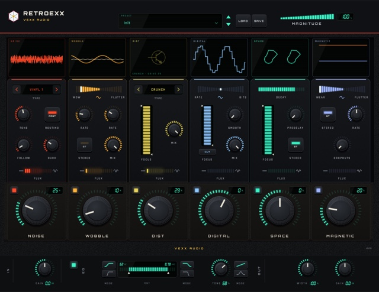

I built the plugins I could not afford.
Vexx Audio is a one-person label: audio processors written from scratch and given away. No
account, no licence key, no trial timer.
See Retroexx
Why it is free
Plugins

Retroexx
A character, noise and space processor for macOS in AU and VST3. Six modules in series, a
master strip, and an interface that reports itself: every screen shows the value of the
control under your mouse, or a visualiser built from the module's own audio.
Version 0.1 · AU and VST3 · 58 host parameters · ten factory presets
Open the page
Source
Why this exists
Growing up I spent a lot of time looking at plugins I could not have. The ones with the good
panels, the ones everyone used. I did not have the money, and for a long while I did not have
the skill either.
At some point I stopped waiting and learned to write them. Vexx Audio is the result: my own
processors, given away with the source open, because I remember what it was like to want them
and not have them.
No account. No licence key. No trial timer.